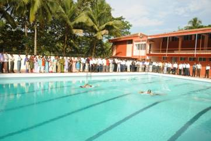
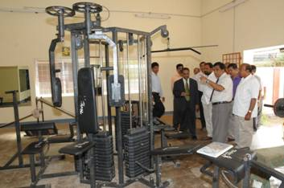
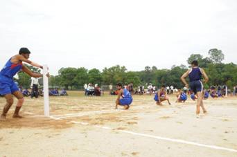
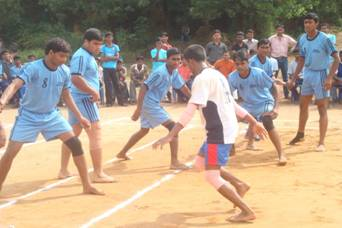
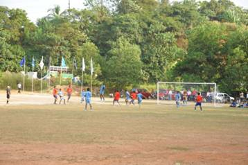
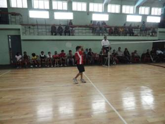

Facilities
Library
The Library is routinely visited by the staff and the students of the college. Quite often research scholars, students, faculty of other institutes also visit the library, since the library is one of the best libraries in the field of fisheries in the country; the library caters to the needs of the users on general and technical matters. Apart from books, journals and back volumes, it also provides magazines and newspapers in sufficient numbers. In addition to reading, members of the library are also entitled to borrow books from the library. Students can borrow the books from stack section for a period of 15 days and the staff for a period of 30 days. Books from the reference section are issued overnight while strictly reference books like encyclopedias, yearbooks, dictionaries etc. are not issued outside but to be referred to only in the library. There are two text-book banks- General and SC/ST. The books from the text-book banks are issued to the students to be kept for a period of one semester. The students are making a good use of this facility.
Cafeteria
The cafeteria is situated within the college campus. It is open for all and there is a separate seating arrangement for staff, students. All types of snacks, soft drinks, meals are available at subsidized rates.
The canteen is opens at 8 am up to 6 pm working days.
Hostel
Students’ residential necessities are paramount for the College. The college has separate student hostels in each of the campuses for both men and lady students. Furthermore, the hostels in the main campus are divided into hostels for undergraduate and postgraduate students.
Both ladies and gents hostels are headed by wardens.
Hostel rooms are comfortably-furnished and make for a good home away from home. There is a range of accommodation options to choose from, for student’s convenience. In this kind of accommodation, students have access to TV room, aqua guard for hot, cold and normal drinking water and other leisure/sports activities within the hostel premises. Also includes the following facilities:
- Wi-Fi connectivity provided in all hostels
- CCTV cameras at entrances of all hostels and foyer inside the campus
- 24x7 electricity and water supply in all the hostels
- Mess with veg and non-veg food
- Caretakers and housekeeping services are provided in all hostels during day and night
Physical Education
It is well equipped with indoor as well as outdoor sports and games facilities. It keeps the students healthy and fit by making them regularly participate in sports and recreational physical activity. It prepares its athletics and sports persons to participate Inter-class, Intercollegiate Inter-university, state and National level events. The students of the department have bagged overall champions in sports and games in KVAFSU Intercollegiate Tournaments and won prizes in inter university tournaments also.
The facilities available under the department as follows
Indoor Courts
- Badminton Court – 600 sq.mts
- Table Tennis – 400 sq.mts
- Chess and Carrom – 100sq.mts
- Gymnasium with multi gym and free weights – 450 sq.mts
Outdoor Courts
- Multipurpose ground with 200m Track( Football, Cricket, Kabaddi, Kho-Kho, etc.)
- Volleyball 3 courts – 600 sq.mts
- Basketball court – 600 sq.mts
- Football – 5400sq.mts
- Athletic Track, separate Jumping and throwing sectors – 5400sq.mts
- Cricket 4 practice pitches – sq.mts
- Kabaddi – 250 sq.mts
- Swimming Pool – 325 sq.mts
 Swimming Pool |
 Gymnasium |
 Kho-Kho Court |
 Kabaddi Court |
 Football Field |
 Badminton Court |
Network and Internet
The computer laboratory is well equipped with 25 computers. It also provides the following facilities such as Printing documents online/offline, Scanning images, photos and documents, Online communication, Database management, Networking etc. All the PC’s are connected with internet which is kept open throughout the office hours for the benefit of both staff and students of the college.
Aquaculture
- State of Art Nutrition and feed Laboratory
- Freshwater prawn hatchery
- Recirculating systems for indoor studies
- Series of more than 100 cement cisterns of different sizes
- Earthen ponds (30 Nos.) varying from 200 to 1000 m3
- Disease diagnostic and histopathology laboratories
Aquatic Animal Health Management
- Microbiology laboratory
- DNA and RNA based diagnostic laboratory with facilities for PCR, RT-PCR, Real Time PCR, Electrophoresis, Gel documentation and analysis, Probe hybridization.
- Recombinant DNA and protein expression facility
- Tissue culture laboratory
- Algal culture facility
- DBT Bioinformatics Centre
- Wet lab with recirculatory system, containment facility
FISHERIES ECONOMICS, STATISTICS AND EXTENSION
- Computing facilities with softwares for data analysis, LIMDEP, SPSS etc.
- Departmental Library
- Research Publications
Aquatic Environment and Management
Laboratory facilities available
- Research Vessel
- Grab and Dredges
- Nanson reversing water bottle
- Spectrophotometer/ Auto analyser
- Static bioassay equipment/ glassware’s
- Microwave digester
- Flame photometer
- pH meter
- Thermometer
- BOD incubator
- COD analyzer
- Hot air oven
- Water bath
- Fume hood chamber
- Armada Jeep
Fish Processing Technology
- Fish canning equipments
- Preparation of fish paste products
- Fish freezing and cold storage
- Preparation of various traditional fishery products and By- products
- Laboratory for rheological studies
- Unit of All India Co- ordinate Research Project for post harvest technology
Fisheries Resources and Management
Facilities available for research and extension
- RS and GIS laboratory
- Research microscopes with photomicrographic attachment
- Binocular microscopes
- Centrifuges
- Water analysis kit
- pH meter
- UV culture chamber
- Colony counter
- Autoclave, Owen, water-bath
- Thermo-regulated shaker
- Microtomes
- Deep freezer, Refrigerators
- Compressor
- Electrophoresis unit
- Densitometer, Micropipettes
- Electronic balance
- Computer
- Fiber glass aquaria of various sizes
- Fishing nets
- Atomic absorption Spectrophotometer
Fishery Engineering & Technology
Facilities available for research and Extension
- Fishing vessel
- Fishing gear fabrication
- Fishing gear material testing lab
- Marine engine lab
- Fish processing machinnaries
- Refrigeration and cold storages
- Navigation and fish finding equipments
- Communication equipments.